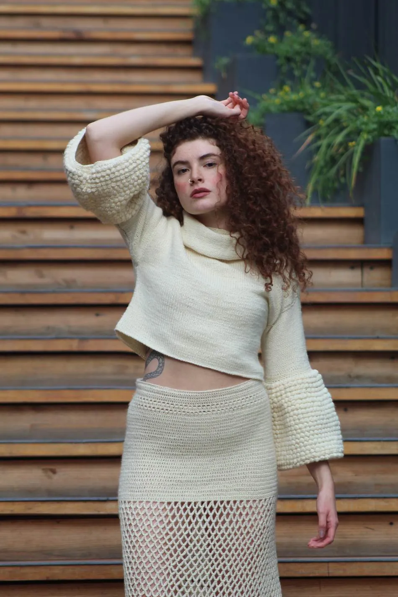
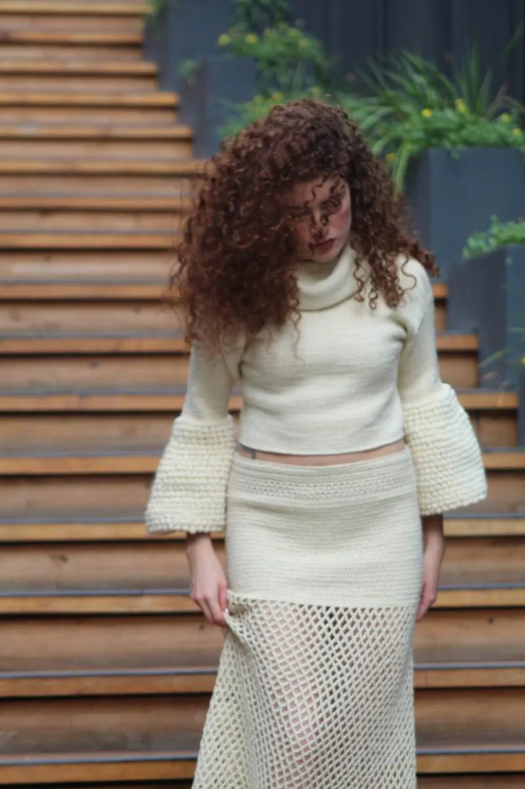
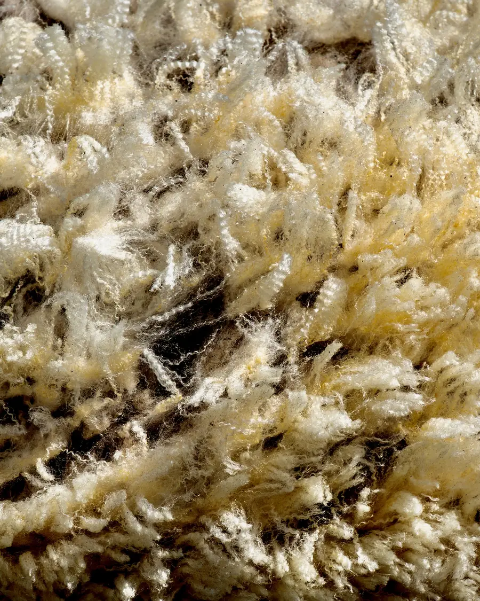

Carola diseña piezas fuera de serie, nacidas en la Patagonia chilena. Lana cruda, sin teñir, trabajada a crochet o palillos.


ATELIER N°1 · «LIBERTAD»
Lana cruda sin teñir

Trazabilidad
Cada pieza usa lana cruda de estancias de la Región de Aysén — blanca o crema, el color natural del animal, sin teñir ni tratar, proveniente de una hilandera mapuche en Coyhaique.
Es la materia prima en su estado más simple: la base sobre la que después se construye el resto de la colección.
¿Te interesa esta pieza o un encargo similar?
Consultar disponibilidad